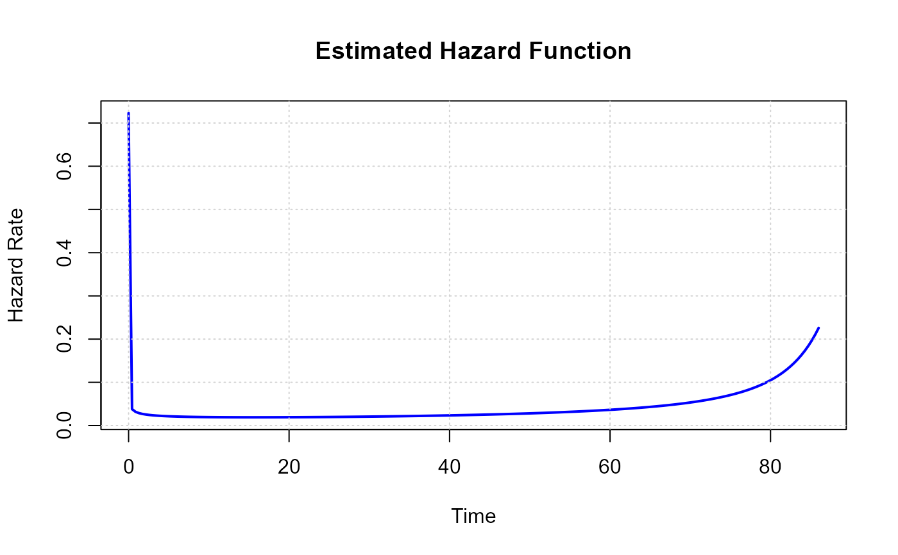

Aarset Device Failure Times
aarset.RdTimes to failure of 50 devices, exhibiting a classic bathtub-shaped hazard rate. This is a standard benchmark dataset in reliability engineering.
Format
A data frame with 50 rows and 2 columns:
- time
Failure time
- status
Event indicator (1 = event occurred)
Source
Aarset, M. V. (1987). How to Identify a Bathtub Hazard Rate. IEEE Transactions on Reliability, R-36(1), 106-108.
Examples
data(aarset)
# \donttest{
fit <- fit_betadanish(survival::Surv(time, status) ~ 1, data = aarset)
#> Warning: pbeta(*, log.p=TRUE) -> bpser(a=388396, b=17.4439, x=0.998003,...) underflow to -Inf
#> Warning: pbeta(*, log.p=TRUE) -> bpser(a=388396, b=17.4439, x=0.993066,...) underflow to -Inf
#> Warning: pbeta(*, log.p=TRUE) -> bpser(a=388396, b=17.4439, x=0.993066,...) underflow to -Inf
#> Warning: pbeta(*, log.p=TRUE) -> bpser(a=388396, b=17.4439, x=0.993066,...) underflow to -Inf
#> Warning: pbeta(*, log.p=TRUE) -> bpser(a=388396, b=17.4439, x=0.993066,...) underflow to -Inf
#> Warning: pbeta(*, log.p=TRUE) -> bpser(a=388396, b=17.4439, x=0.993066,...) underflow to -Inf
#> Warning: pbeta(*, log.p=TRUE) -> bpser(a=388396, b=17.4439, x=0.987443,...) underflow to -Inf
#> Warning: pbeta(*, log.p=TRUE) -> bpser(a=388396, b=17.4439, x=0.981737,...) underflow to -Inf
#> Warning: pbeta(*, log.p=TRUE) -> bpser(a=388396, b=17.4439, x=0.98015,...) underflow to -Inf
#> Warning: pbeta(*, log.p=TRUE) -> bpser(a=388396, b=17.4439, x=0.973441,...) underflow to -Inf
#> Warning: pbeta(*, log.p=TRUE) -> bpser(a=388396, b=17.4439, x=0.966942,...) underflow to -Inf
#> Warning: pbeta(*, log.p=TRUE) -> bpser(a=388396, b=17.4439, x=0.966942,...) underflow to -Inf
#> Warning: pbeta(*, log.p=TRUE) -> bpser(a=388396, b=17.4439, x=0.966942,...) underflow to -Inf
#> Warning: pbeta(*, log.p=TRUE) -> bpser(a=388396, b=17.4439, x=0.966942,...) underflow to -Inf
#> Warning: pbeta(*, log.p=TRUE) -> bpser(a=388396, b=17.4439, x=0.966942,...) underflow to -Inf
#> Warning: pbeta(*, log.p=TRUE) -> bpser(a=388396, b=17.4439, x=0.964074,...) underflow to -Inf
#> Warning: pbeta(*, log.p=TRUE) -> bpser(a=388396, b=17.4439, x=0.951958,...) underflow to -Inf
#> Warning: pbeta(*, log.p=TRUE) -> bpser(a=388396, b=17.4439, x=0.949153,...) underflow to -Inf
#> Warning: pbeta(*, log.p=TRUE) -> bpser(a=388396, b=17.4439, x=0.945824,...) underflow to -Inf
#> Warning: pbeta(*, log.p=TRUE) -> bpser(a=388396, b=17.4439, x=0.94518,...) underflow to -Inf
#> Warning: pbeta(*, log.p=TRUE) -> bpser(a=388396, b=17.4439, x=0.936758,...) underflow to -Inf
#> Warning: pbeta(*, log.p=TRUE) -> bpser(a=388396, b=17.4439, x=0.930252,...) underflow to -Inf
#> Warning: pbeta(*, log.p=TRUE) -> bpser(a=388396, b=17.4439, x=0.928707,...) underflow to -Inf
#> Warning: pbeta(*, log.p=TRUE) -> bpser(a=388396, b=17.4439, x=0.926692,...) underflow to -Inf
#> Warning: pbeta(*, log.p=TRUE) -> bpser(a=388396, b=17.4439, x=0.925212,...) underflow to -Inf
#> Warning: pbeta(*, log.p=TRUE) -> bpser(a=388396, b=17.4439, x=0.925212,...) underflow to -Inf
#> Warning: pbeta(*, log.p=TRUE) -> bpser(a=388396, b=17.4439, x=0.924724,...) underflow to -Inf
#> Warning: pbeta(*, log.p=TRUE) -> bpser(a=388396, b=17.4439, x=0.923757,...) underflow to -Inf
#> Warning: pbeta(*, log.p=TRUE) -> bpser(a=388396, b=17.4439, x=0.923757,...) underflow to -Inf
#> Warning: pbeta(*, log.p=TRUE) -> bpser(a=388396, b=17.4439, x=0.923757,...) underflow to -Inf
#> Warning: pbeta(*, log.p=TRUE) -> bpser(a=388396, b=17.4439, x=0.923757,...) underflow to -Inf
#> Warning: pbeta(*, log.p=TRUE) -> bpser(a=388396, b=17.4439, x=0.923757,...) underflow to -Inf
#> Warning: pbeta(*, log.p=TRUE) -> bpser(a=388396, b=17.4439, x=0.923277,...) underflow to -Inf
#> Warning: pbeta(*, log.p=TRUE) -> bpser(a=388396, b=17.4439, x=0.923277,...) underflow to -Inf
#> Warning: pbeta(*, log.p=TRUE) -> bpser(a=1.38107e+08, b=13.2645, x=0.998734,...) underflow to -Inf
#> Warning: pbeta(*, log.p=TRUE) -> bpser(a=1.38107e+08, b=13.2645, x=0.997691,...) underflow to -Inf
#> Warning: pbeta(*, log.p=TRUE) -> bpser(a=1.38107e+08, b=13.2645, x=0.990712,...) underflow to -Inf
#> Warning: pbeta(*, log.p=TRUE) -> bpser(a=1.38107e+08, b=13.2645, x=0.990712,...) underflow to -Inf
#> Warning: pbeta(*, log.p=TRUE) -> bpser(a=1.38107e+08, b=13.2645, x=0.990712,...) underflow to -Inf
#> Warning: pbeta(*, log.p=TRUE) -> bpser(a=1.38107e+08, b=13.2645, x=0.990712,...) underflow to -Inf
#> Warning: pbeta(*, log.p=TRUE) -> bpser(a=1.38107e+08, b=13.2645, x=0.990712,...) underflow to -Inf
#> Warning: pbeta(*, log.p=TRUE) -> bpser(a=1.38107e+08, b=13.2645, x=0.976113,...) underflow to -Inf
#> Warning: pbeta(*, log.p=TRUE) -> bpser(a=1.38107e+08, b=13.2645, x=0.956937,...) underflow to -Inf
#> Warning: pbeta(*, log.p=TRUE) -> bpser(a=1.38107e+08, b=13.2645, x=0.950968,...) underflow to -Inf
#> Warning: pbeta(*, log.p=TRUE) -> bpser(a=1.38107e+08, b=13.2645, x=0.928539,...) underflow to -Inf
#> Warning: bpser(a=4.55875e+12, b=1.09818, x=1,...) did not converge (n=1e7, |w|/tol=22787.8 > 1; A=-2.01416e+06)
#> Warning: bpser(a=4.55875e+12, b=1.09818, x=0.999999,...) did not converge (n=1e7, |w|/tol=176.161 > 1; A=-4.23089e+06)
#> Warning: Parameters a, b, c, and k must be strictly positive.
#> Warning: Parameters a, b, c, and k must be strictly positive.
#> Warning: bpser(a=7.72299e+14, b=1.12669, x=1,...) did not converge (n=1e7, |w|/tol=831075 > 1; A=-4.5947e+07)
#> Warning: bpser(a=7.72299e+14, b=1.12669, x=1,...) did not converge (n=1e7, |w|/tol=379725 > 1; A=-1.06439e+08)
#> Warning: bpser(a=7.72299e+14, b=1.12669, x=0.999999,...) did not converge (n=1e7, |w|/tol=92.99 > 1; A=-7.48583e+08)
#> Warning: bpser(a=7.72299e+14, b=1.12669, x=0.999999,...) did not converge (n=1e7, |w|/tol=92.99 > 1; A=-7.48583e+08)
#> Warning: bpser(a=7.72299e+14, b=1.12669, x=0.999999,...) did not converge (n=1e7, |w|/tol=92.99 > 1; A=-7.48583e+08)
#> Warning: bpser(a=7.72299e+14, b=1.12669, x=0.999999,...) did not converge (n=1e7, |w|/tol=92.99 > 1; A=-7.48583e+08)
#> Warning: bpser(a=7.72299e+14, b=1.12669, x=0.999999,...) did not converge (n=1e7, |w|/tol=92.99 > 1; A=-7.48583e+08)
plot(fit, type = "hazard")

# }